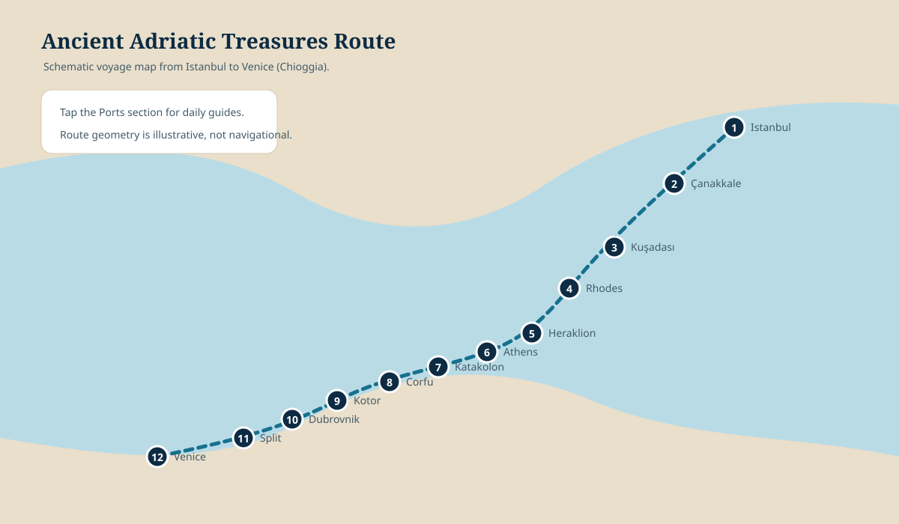

Offline maps with consistent controls
Every map now includes a visible preview, a full-screen expand control, a clear map type label, and live-navigation buttons where a useful destination or route can be opened in Apple Maps or Google Maps.
Offline schematic works without internetLive navigation opens an external map service

Offline overview
Full journey
California to Istanbul, the Viking voyage, Venice, and Northern Italy.

Offline route + live navigation
Sultanahmet walking route
Hotel, Blue Mosque, Hippodrome, Hagia Sophia, Cistern, Topkapı, and Gülhane.

Offline orientation + live destinations
Bosphorus ferry & waterfront
Eminönü, Karaköy, Dolmabahçe, Ortaköy, Rumeli Hisarı, and Kadıköy.

Offline route + live navigation
Markets walk
Spice Bazaar to Grand Bazaar with the return tram strategy.

Offline transit schematic
Core transit
T1 tram, ferry interchange, and metro connection.

Offline transfer framework
Embarkation transfer
A terminal-confirmation framework that stays useful if Viking changes the assigned pier.

Offline voyage overview
Viking cruise route
The full Ancient Adriatic Treasures sequence from Istanbul to Venice.
Map behavior: tap the map image or the ⛶ button to open it full screen. Drag to pan, use a mouse wheel or trackpad to zoom, and press Escape to close. The external-map buttons require internet access and are intended for final turn-by-turn routing.